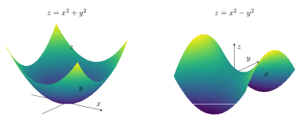

Bir doğrunun tek bir başlangıç noktası \(P_0\) ve sıfır olmayan bir doğrultu vektörü \(\mathbf u\) bilinirse tüm noktaları bir parametreyle üretilir. İki nokta verilmişse yön olarak aralarındaki fark alınır. Aynı doğru için başlangıç noktası veya yönün sıfır olmayan katı değişebilir.
\(a,b,c\) sıfır değilse \((x-x_0)/a=(y-y_0)/b=(z-z_0)/c\) simetrik biçimi elde edilir. Bir bileşen sıfırsa ona ait koordinat sabittir. Örneğin \(b=0\) ise \(y=y_0\) ayrıca yazılır; sıfıra bölme yapılmaz.
\(A=(1,2,3)\) noktasından geçen ve \((2,3,0)\) yönüne paralel doğruyu yazınız.
Adım adım çözümü göster
\(x=1+2t,\ y=2+3t,\ z=3\).
Simetrik gösterim \((x-1)/2=(y-2)/3\), ayrıca \(z=3\). İki denklem uzayda tek doğruyu belirler.
2.2
Doğruların konumları ve açıları
İki doğru karşılaştırılırken ilk adım yön vektörlerini karşılaştırmaktır. Paralel yönler için bir doğrunun noktası ötekinin üzerinde de bulunuyorsa doğrular çakışıktır. Paralel olmayan yönlerde kesişim için iki parametreli üç denklem çözülür. Çözüm yoksa doğrular aykırıdır.
Tahtada \(x/1=y/1=z/0\) ve \((x-1)/1=y/(-1)=z/0\) ile belirtilen doğruların açısı nedir?
Adım adım çözümü göster
Bu gösterimde \(z/0\) gerçek bir bölüm değildir; \(z=0\) kısıtının kısa yazımı olarak yorumlanır. Parametrik biçimler \((t,t,0)\) ve \((1+s,-s,0)\) olur.
Yönler \((1,1,0)\), \((1,-1,0)\), çarpımları 0. \(t=1+s=-s\) den \(t=1/2,s=-1/2\); kesişim \((1/2,1/2,0)\). Dolayısıyla açı \(90^\circ\).
2.3
Düzlem denklemi ve normal vektör
Bir düzlemin içinde pek çok doğrultu vardır; bunların tümüne dik olan bir normal vektör düzlemin yönelimini belirler. \(P_0\) düzlem üzerinde ve \(\mathbf n=(A,B,C)\ne\mathbf0\) normal ise her \(P\) noktası için \(\overrightarrow{P_0P}\cdot\mathbf n=0\) yazılır.
Üç nokta verildiğinde aynı başlangıçtan çıkan iki fark vektörünün vektörel çarpımı normal olur. Çarpım sıfırsa noktalar doğrudaştır ve tek bir düzlem belirlemez. Bulunan denklemi her üç noktada denemek iyi bir hata kontrolüdür.
\(A=(2,3,4)\) noktasından geçen, normali \((1,3,4)\) olan düzlemi bulunuz.
Adım adım çözümü göster
\((x-2)+3(y-3)+4(z-4)=0\).
Düzenlenince \(x+3y+4z-27=0\). Normalin herhangi bir sıfır olmayan katı aynı düzlemi verir.
2.4
Doğru-düzlem ve iki düzlemin kesişimi
Doğruyu düzlemde yerine koyunca parametre için tek bir lineer denklem çıkar. \(\mathbf n\cdot\mathbf u\ne0\) ise tek kesişim vardır. \(\mathbf n\cdot\mathbf u=0\) ise doğru düzleme paraleldir; başlangıç noktası denklemi sağlıyorsa doğru düzlemin içindedir.
\((x-2)/1=y/2=(z+1)/(-1)\) doğrusu ile \(x-y+2z=3\) düzleminin kesişimi nedir?
Adım adım çözümü göster
\(x=2+t,\ y=2t,\ z=-1-t\) yazılır.
Yerine koyunca \((2+t)-2t+2(-1-t)=3\), yani \(-3t=3\). \(t=-1\) ile nokta \((1,-2,0)\). Kontrol: \(1-(-2)+0=3\).
Paralel olmayan iki düzlemin kesişim doğrusunun yönü \(\mathbf n_1\times\mathbf n_2\) olur. Bir koordinatı uygun seçip kalan iki denklemi çözerek doğru üzerinde bir nokta bulunur. İki normal paralelse kesişim bir doğru olamaz; düzlemler çakışık veya ayrık paraleldir.
2.7Pekiştirme
İki düzlemin arakesiti
\(x+y+z=2\) ve \(x-y+z=0\) düzlemlerinin kesişimini yazınız.
Adım adım çözümü göster
Denklemleri çıkarınca \(2y=2\), yani \(y=1\). Sonra \(x+z=1\).
\(x=t\) seçilirse \(\mathbf r(t)=(t,1,1-t)\). Yön \((1,0,-1)\), normallerin vektörel çarpımına paraleldir.
Doğru ile düzlem açısında sinüs kullanılmasının nedeni, yönle normal arasındaki dar açıya tümleyen olmasıdır. Doğru düzleme paralelse \(\mathbf u\cdot\mathbf n=0\) ve açı 0; düzleme dikse \(\mathbf u\parallel\mathbf n\) ve açı \(90^\circ\) çıkar. İki düzlemin dikliği normal vektörlerin dikliğidir.
2.6
Noktanın doğruya ve düzleme uzaklığı
Uzaklık her zaman en kısa, dolayısıyla dik bağlantının uzunluğudur. Nokta-doğru uzaklığında \(\overrightarrow{AP}\) ile yön vektörünün oluşturduğu paralelkenarın alanı tabana bölünür. Nokta-düzlem uzaklığında ise \(\overrightarrow{P_0P}\) normal doğrultusuna izdüşürülür.
Dik izdüşüm noktası \(H=P-\frac{1}{9}(1,2,-2)=(8/9,-2/9,20/9)\). Denkleme koyunca sıfır çıkar ve \(\|P-H\|=1/3\).
Paralel düzlemler aynı normal katsayılarıyla yazılmışsa \(d=|D_2-D_1|/\|\mathbf n\|\). Katsayılar yalnızca orantılıysa önce aynı normale dönüştür. Aykırı doğrular için \(d=|(\mathbf r_2-\mathbf r_1)\cdot(\mathbf u\times\mathbf v)|/\|\mathbf u\times\mathbf v\|\); bu son bağıntı paralel doğrularda kullanılmaz.
2.7
Küre ve kareye tamamlama
Küre, bir merkezden eşit uzaklıktaki noktaların kümesidir. Genel denklemde üç kare teriminin katsayısı aynı ve çapraz terimler yoksa kareye tamamlama ile merkez ve yarıçap okunabilir. Sabit terimden yarıçapın karesini yanlış işaretle çıkarmamak için her koordinatı ayrı düzenle.
\(x^2+y^2+z^2+4x-6y+2z-11=0\) küresinin merkezi ve yarıçapı nedir?
Adım adım çözümü göster
\((x+2)^2-4+(y-3)^2-9+(z+1)^2-1-11=0\).
\((x+2)^2+(y-3)^2+(z+1)^2=25\). Merkez \((-2,3,-1)\), yarıçap 5.
2.8
Silindirler ve kuadratik yüzeyleri tanıma
Bir denklemde bir koordinat hiç görünmüyorsa düzlemdeki eğri o koordinat boyunca taşınır. Örneğin \(x^2+y^2=4\), \(z\) eksenine paralel dairesel silindirdir; \(z=y^2\), \(x\) doğrultusunda uzayan parabolik silindirdir. Silindirin mutlaka dairesel olması gerekmez.
Yüzey
Standart örnek
Ayırt edici özellik
Elipsoid
\(x^2/a^2+y^2/b^2+z^2/c^2=1\)
Üç kare de pozitif; kapalı.
Tek kanatlı hiperboloid
\(x^2/a^2+y^2/b^2-z^2/c^2=1\)
Bir eksi; eksi işaretli eksen boyunca tek parça.
Çift kanatlı hiperboloid
\(-x^2/a^2-y^2/b^2+z^2/c^2=1\)
İki eksi; artı işaretli eksende iki parça.
Eliptik koni
\(z^2/c^2=x^2/a^2+y^2/b^2\)
Sıfır seviyesi; iki kanat tepe noktasında birleşir.
Eliptik paraboloid
\(z=x^2/a^2+y^2/b^2\)
Yatay kesit elips; dikey kesit parabol.
Hiperbolik paraboloid
\(z=x^2/a^2-y^2/b^2\)
Eyer; iki ana doğrultuda ters bükülme.

Eliptik paraboloid ve hiperbolik paraboloid: kesitlerin işareti yüzeyin biçimini belirler.